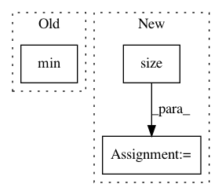

6dc79d867cea8e9ed4737d7449ad9481fd6492d2,s2cnn/soft/so3_fft.py,,_so3_fft,#Any#Any#Any#Any#,33
Before Change
else:
if b_in < b_out:
output.fill_(0)
for l in range(min(b_in, b_out)):
s = slice(l * (4 * l ** 2 - 1) // 3, l * (4 * l ** 2 - 1) // 3 + (2 * l + 1) ** 2)
xx = torch.cat((x[:, :, -l:], x[:, :, :l + 1]), dim=2) if l > 0 else x[:, :, :1]
xx = torch.cat((xx[:, :, :, -l:], xx[:, :, :, :l + 1]), dim=3) if l > 0 else xx[:, :, :, :1]
After Change
s = slice(l * (4 * l ** 2 - 1) // 3, l * (4 * l ** 2 - 1) // 3 + (2 * l + 1) ** 2)
l1 = min(l, b_in - 1) // if b_out > b_in, consider high frequencies as null
xx = x.new_zeros((x.size(0), x.size(1), 2 * l + 1, 2 * l + 1, 2))
xx[:, :, l: l + l1 + 1, l: l + l1 + 1] = x[:, :, :l1 + 1, :l1 + 1]
if l1 > 0:
xx[:, :, l - l1:l, l: l + l1 + 1] = x[:, :, -l1:, :l1 + 1]
xx[:, :, l: l + l1 + 1, l - l1:l] = x[:, :, :l1 + 1, -l1:]
In pattern: SUPERPATTERN
Frequency: 3
Non-data size: 3
Instances
Project Name: jonas-koehler/s2cnn
Commit Name: 6dc79d867cea8e9ed4737d7449ad9481fd6492d2
Time: 2018-08-07
Author: geiger.mario@gmail.com
File Name: s2cnn/soft/so3_fft.py
Class Name:
Method Name: _so3_fft
Project Name: cornellius-gp/gpytorch
Commit Name: 57763571ee5d8c4414dc57fec6f151bfe8d13995
Time: 2018-04-03
Author: srikanth.gadicherla@aalto.fi
File Name: gpytorch/kernels/spectral_mixture_kernel.py
Class Name: SpectralMixtureKernel
Method Name: initialize
Project Name: jonas-koehler/s2cnn
Commit Name: 6dc79d867cea8e9ed4737d7449ad9481fd6492d2
Time: 2018-08-07
Author: geiger.mario@gmail.com
File Name: s2cnn/soft/so3_fft.py
Class Name:
Method Name: _so3_rfft